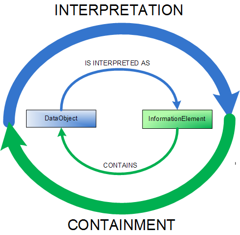
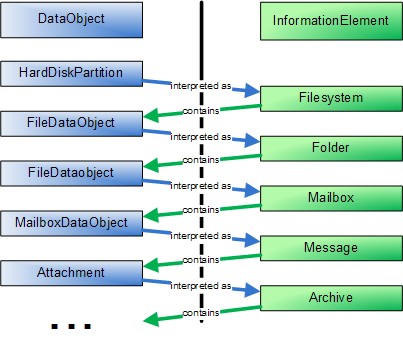

NEPOMUK Information Element Ontology
Task-Force Ontologies
- Latest Version:
- http://www.semanticdesktop.org/ontologies/nie
- This Version:
- http://www.semanticdesktop.org/ontologies/2007/01/19/nie
This file refers to the Revision 9 of NIE. Minor changes may be implemented in future revisions.
With each new revision, the documentation and all serializations of the ontology will be updated.
- Authors:
- Antoni Mylka, DFKI, antoni.mylka@dfki.de
- Leo Sauermann, DFKI, leo.sauermann@dfki.de
- Michael Sintek, DFKI, michael.sintek@dfki.de
- Ludger van Elst, DFKI, elst@dfki.uni-kl.de
- Editor:
- Antoni Mylka, DFKI, antoni.mylka@dfki.de
- Contributors:
- Evgeny 'phreedom' Egorochkin, KDE Strigi Developer, stexx@mail.ru
- Christiaan Fluit, Aduna, christiaan.fluit@aduna-software.com
- Ontology:
- XML/RDFS Serialization: NIE
(Data Graph Only)
- XML/RDFS Serialization: NIE
(Metadata Graph Only)
- TriG Serialization: NIE
(Graph Set)
Copyright © 2007 DFKI®
This work is made available under the terms of NEPOMUK software
license
Abstract
The NEPOMUK Information
Element Framework is an attempt to provide unified vocabulary for
describing native resources available on the desktop. This document
presents the high-level overview of the entire framework, its
motivations and design decisions, as well as classes and properties
that comprise the core part of the framework - the NEPOMUK Information
Element Ontology itself.
Status of this document
This document arose from
the work of the Task-Force ontologies within the NEPOMUK project.
This document is a DRAFT made available by the NEPOMUK Consortium for
discussion only. This document is a work in progress and may be
updated, replaced, or rendered obsolete by other documents at any time.
This document is a part
in a set of seven documents, which together comprise the complete
specification of the NEPOMUK Information Element Ontology Framework.
These are: NIE, NFO,
NCO,
NMO,
NCAL,
NEXIF,
NID3.
The problem is a difficult one
given the multitude of applications and data formats. Previous semantic
desktop projects (e.g. Haystack or Gnowsis) had to
develop their solutions. Some attempts at standardization have been
made (Adobe
XMP or Freedesktop.org
XESAM) but a definite standard hasn't emerged yet.
Apart from large metadata description frameworks there exists a
considerable number of smaller single-purpose ontologies aimed at
specific types of resources
(e.g. ICAL
or VCARD).
A broad array of utilities has been developed for extracting RDF
metadata from desktop sources (see RDFizers website,
for an overview).
Various problems have been identified with those ontologies. They are
expressed in many languages, often aren't as detailed as one would
like, sometimes contain
outright bugs. NEPOMUK Information Element Framework is an attempt to
build upon
that experience, to provide unified vocabulary to describe typical
native resources that may be of interest to the user. These resources
are intended to serve as raw data for other semantic applications. They
can be browsed, searched,
annotated and linked with each other. It is hoped that this framework
will help to achieve the critical mass of raw RDF data that will ignite
rapid development of applications which will bring actual value to the
user and make everyday work
easier and more productive.
The open source community has recently started a widespread
standardization activity under the name of XESAM Project.
It gathers together developers from many important desktop search
projects like Strigi,
Gnome Beagle,
Gnome
Tracker, Pinot
and Recol.
The NEPOMUK project has been involved in this effort. NIE has
benefitted much from the insight of XESAM developers (most notably
Evgeny Egorochkin). Even though the ontologies themselves are kept
separate, due
to certain differences in requirements, NIE strived to maximize
interoperability
with XESAM and provide direct equivalents of XESAM classes an
properties wherever possible.
In order to justify the
design decisions that were made when creating NIE, a short introduction
on the ontology architecture of NEPOMUK is necessary. It can be
conceptually divided in two tiers.
The lower one is the data
tier. It stores the native data extracted from various
data sources on the desktop. These include filesystems, mailboxes,
calendars, and addressbooks. They are usually maintained
by external applications, that are not part of NEPOMUK by themselves.
The user still uses Kontact or MS Outlook for contacts and events,
OpenOffice or Word for writing documents etc. The upper ontology layer
is composed of concepts and instances that make up the Personal
Information Model. They represent more abstract entities.
Native resources are extracted,
converted to
RDF and made available for Semantic Web software agents. An approach is
to store
converted RDF in a repository, making it queryable. Another approach is
to adapt datasources dynamically, using virtual RDF graphs
but in general, extraction and storing RDF in a queryable index is the
common approach, also used by the other desktop search engines.
Data represented in NIE has
three roles. First, NIE data is intended to be generated by an
extraction process.
Second, RDF-based systems can create NIE structures natively, without
building
on existing applications. Third, data expressed in NIE can be imported
back to native applications. The ontology is therefore a mediator
between semantic and
native applications.
These roles explain some
of the design decisions outlined below. They are a
direct result of the following assumptions about the NEPOMUK
architecture:
- The 'PIMO'
layer can much more easily work with native resources if they are
expressed
in a single language (see
here), using
limited vocabulary
(see here), where
similar entities are always
expressed in the same way with the same vocabulary elements (see here). - The task of
dealing with dynamic nature of the native resources can be more easily
tackled
when it is divided into two subtasks :
- synchronizing the 'real-life' with the data repository,
that doesn't contain abstract concepts
- synchronizing the data repository with the abstract
concepts in the personal information model
These subtasks can be assigned to different components that only need
limited
knowledge to perform them and can thus be much simpler.
The authors of this document believe that these assumptions would also
hold for
other semantic desktop systems.
Requirements stated above led to
certain guidelines for the ontology design.
The following sections
contain a brief outline of them. This is by no means a sound and
complete set of
axioms that are always correct, but a set of factors that were taken
into
account. They are given in their perceived order of importance.
Developers of
ontologies that will extend NIE to describe new kinds of data are
strongly
encouraged to be consistent with them.
NIE is expressed in the NEPOMUK
Representational Language as defined in the
recently published specification ([NRLSPEC]).
This
means, that whenever some existing ontologies are to be reused, they
need to
be adapted to NRL. Author's experience suggests that such an adaptation
would usually entail following steps:
- Remove language constructs that are not present in RDFS.
Some of them have
their NRL equivalents (like FunctionalProperty or TransitiveProperty in
OWL or
Protege ontologies). Others don't (e.g. OWL unions or Protege
overriding
properties). If a construct has a NRL equivalent - it may be
substituted. If
not, then the information may be expressed in the, rdfs:comment or in
the
documentation.
- Create a new namespace for the new ontology, to
distinguish between the original
one and the new representation in NRL.
- Let all properties
have concrete domains and ranges. Bring the ontology to a state where
the data
that conforms to it doesn't need to have any untyped nodes.
- Provide links with the original ontology (e.g. via
rdfs:subClassOf or
rdfs:subPropertyOf relationships) if possible.
- Examine the ontology for possibilities of alignment with
existing NIE ontologies, in accordance with the integration
guidelines.
This decision is fundamental in its nature. It could be interpreted as
being
against the spirit of reuse, pervasive in the Semantic Web community.
It brings
many benefits though. They include:
- Easier consistency
checking. There are differences between semantics
of various ontology languages. Some of them don't specify any
constraints.
(e.g. RDF/S domains and ranges aren't interpreted as constraints that
have to be met, but as rules that entail facts. [RDFSEMANTICS]) Apart from
that many well-established ontologies (like Dublin Core [DCSPEC], Kanzaki EXIF [EXIFRDF] or important parts of
ICAL [ICALRDF] don't have
the
domains and ranges specified at all, so there is nothing to check.
- Simpler inference. An
inferencer would have to reason
over data that uses vocabulary from many ontologies in many languages.
- Explicit connections
between ontologies. The application developer would need to be aware of
the fact
that an instance of a class from one ontology, might also be annotated
with
properties from some other ontology. This is important information,
that is not
expressed in the ontology itself.
- Unified ontology
universe. Since the Personal Information Model would definitely be
expressed in NRL
- leaving the raw data described in its 'original' vocabulary would
split the
'NEPOMUK universe' into two parts - one consistent, well checked, where
inference is efficient and well-implemented - the part in NRL, and the
chaotic,
unchecked part in all possible languages.
- Easier data
integration. Algorithms would need to have knowledge of multiple
languages and
differences in their semantics. Using single language removes this
burden and
paves the way for further benefits - described in the next section.
The main goal of the Semantic
Desktop is to aid the user in his/her everyday
tasks. In order to achieve this goal - the user wants to have a uniform
view of
all his/her data, where application boundaries are not important. This
requirement is a very important one. It implies that wherever data with
similar
'meaning' is stored or processed - it needs to be described using the
same
vocabulary. Having multiple disparate vocabularies for dealing with
similar
entities would make the task of data integration much more difficult.
In the
previous section we mentioned that differences between representational
languages are to be avoided. Here we fortify that claim by saying that
overlap
between multiple ontologies in the same domain is also unadvisable.
This statement has two practical
consequences. They are outlined below.
In domains where there are many
competing 'de facto standard' ontologies - for
NIE either one of them is chosen (and adapted - see sec. 4.1) or both are
merged into a third one, with incosistencies resolved. It is definitely
not the
purpose of NEPOMUK to deny existence of publicly available ontologies.
NEPOMUK
wants to provide a platform that would simplify the development of
semantically-enabled applications. To achieve this goal NEPOMUK aims to
alleviate the burden of learning and supporting multiple vocabularies.
If the user needs to integrate data expressed in the vocabulary of some
other
ontology into the NEPOMUK knowledge base it needs to be transformed
into NRL and
aligned with other NEPOMUK ontologies. This will enable NEPOMUK
applications to process it easily. Maintaining a single import/export
utility is
much less costly than having all applications support all vocabularies.
In a
domain where many applications need to work with many vocabularies,
there is an
entire matrix of combinations that need to be supported. A unified
approach
encouraged by NEPOMUK aims to reduce this complexity from quadratic to
linear.
NEPOMUK doesn't aim to substitute existing data with their RDF
counterparts. The
complexity of existing and future data formats makes round-trip 1 to 1
transformation between RDF and the native format nearly impossible.
There were
attempts at creating vocabularies that would express all complexities
of a
non-rdf data format. (e.g. [ICALRDF],
or [VCARDRDF]). Even
if they succeeded in achieving high level of conformance, they didn't
explore
real benefits of RDF, like common datatypes and URI references.
Ontologies that
resulted from these attempts have deficiencies that inhibit their
usefullness
within social semantic desktop context.
Tight integration between
ontologies is needed. Some data formats contain
references to entities that fall beyond their intended scope, but are
nevertheless important. Examples might include references to contacts
in emails
(to, from, cc, bcc fields), calendar events (attendee, rsvp) or text
documents
(author, reviewer). These references are mostly incomplete. (a 'to'
field in an
email usually contains only the address, sometimes a name).
Nevertheless it is
better for these occurences to be described as instances of classes
from a
specialized ontology (even though these instances might hardly contain
more that
one or two fields) than leave them as plain string values.
Having such incomplete instances
facilitates ontology alignment. It is
comparatively easy to create and algorithm that browses all instances
of a given
class and implements some similarity measure to detect duplicates in
order to
link them with a unique instance of some higher-level concept. If those
instances were expressed with plain strings, the problem would become
more
difficult.
NIE contains concepts that are
directly related to native resources available on
a local desktop or in the network. These are mostly files or can be
mapped to
parts of files. (like calendar entries are parts of a calendar file,
contacts
are part of an addressbook file etc.) It doesn't contain abstract
concepts that
don't have their direct representations as sequences of bytes (like
'Person',
'Project', 'Publication', 'Job' etc.) These are delegated to other
ontologies.
It is the task of appropriate tools to map between the 'raw' data and
those
'high-level' concepts.
The most immediate goal of NIE is
to replace ontologies currently used by
Aperture, Beagle++ and Strigi. That's why NIE is designed with easy
migration in
mind, wherever it didn't clash with above objectives. Moreover existing
standards are to be observed. This means widespread norms, usually
issued by
official standardization bodies like World Wide Web Consortium (W3C
Recommendations), Internet Engineering Task Force (RFC Documents),
International
Organization for Standardization etc. Specific attention is given to
the
standardization effort undertaken by the open source community in the
XESAM
Project (eXtEnsible Search And Metadata Specification).
The core of the NEPOMUK
Information Element Ontology and the entire NIE Framework
revolves around the concepts of DataObject
and InformationElement.
They express
the representation and content of a piece of data. Their specialized
subclasses can
be used to classify a wide array of desktop resources and express them
in RDF.
DataObjects represent
physical entities that contain data. They are extracted from
filesystems,
archives, contact lists, mailboxes etc. The representation itself is
usually not
interesting to the user. In order for a piece of data to be actually
understood,
it needs to be interpreted as an appropriate type of an
InformationElement. Such
an interpretation makes it possible to inspect the content of a DataObject
correctly, and possibly divide it into parts - new DataObjects which can have
their
own interpretations. This process is iterative and continues as long as
needed.
All
resources on the desktop are basically related to each other with two
most
fundamental types of relations: interpretation and containment.

DataObject represents a
native entity the user works with. The usage of the term
'native' is important. It means that a DataObject
can usually be directly mapped
to a sequence of bytes. Examples include a file, a set of files or a
part of a
file. The granularity depends on the user. DataObject
is atomic in the sense, that in order to
distinguish any more data objects within, it has to be interpreted
first.
The detailed list of DataObject
subclasses is subject to extension. It is
envisioned that future applications will define their own DataObject subclasses
in their own ontologies. The NEPOMUK Information Element Ontology
defines only
the most generic properties deemed applicable to all DataObjects. More specific
information is to be expressed using vocabularies extending NIE.
InformationElement
is a piece of information stored within a data object. Content-specific
properties are defined as
properties of an InformationElement.
It is separate from the DataObject
in order
to make the interpretation independent of the representation. Research
has shown
that this flexibility is necessary to create a framework flexible
enough to
accomodate for the complexity of data structures present on the
desktop. For
example let's consider a mailbox. It is usually stored in a file (this
is
expressed as a FileDataObject interpreted as a Mailbox). An IMAP
mailbox though is
stored on a remote server, but from the interpretation point of view it
doesn't
differ from a file mailbox (in NIE this is expressed as a
RemoteHostAddress
interpreted as a Mailbox). Another representation may be a software
service
available through some interprocess communication mechanism (as is the
case of
the Outlook mailbox available via a COM interface). In NIE this is
expressed
as a SoftwareService interpreted as a mailbox). We have three
completely
different representations (file, remote host, software service) with an
identical interpretation (Mailbox).
For a more thorough example see figure below. We see
an in-file mailbox, containing an email, which contains an attachment.
Notice
that entities appearing on the right side can also appear at different
levels.
Apart from the already mentioned mailbox, there are other
possibilities. A
partition may be interpreted as a filesystem, but also a file
containing an
image of a DVD can be interpreted as a filesystem. A MailboxDataObject
can be
interpreted as a Message,
but an .eml file too. The same applies to Contacts.
We
may have a single .vcf file containing a single VCARD, which is
interpreted as a
Contact,
but an email
Attachment,
or a RemoteDataObject
may have the same
interpretation.

This approach gives a uniform overview of data regardless of how it's
represented.
DataObject instances don't
just come out of thin air. They are usually extracted
from some data source. These are represented by instances of a DataSource class. Each instance
represents a native application or system,
that manages information. A DataSource
instance aggregates information required
by the data extraction component to gain access to the source. In the
case of a
Filesystem,
this
may be a path, for a Mailbox
this may be the hostname, login and password etc.
Various subclasses of a DataSource
are envisioned. They may include filesystems data sources,
calendar data sources, website data sources etc. The exact choice of
types and properties
is considered specific to a particular rdf extraction application. Data
extraction applications are encouraged
to provide their own data source ontologies. Such an ontology should
contain
data source types supported by the application coupled with properties
necessary
to gain access to them.
It is important to notice that certain entities (such as a mailbox or a
filesystem)
may appear both as a DataSource and as an InformationElement. They
should not
be confused though. They are completely different classes with
completely different
meaning. DataSource is an entity for which an rdf extraction framework
of choice
has an adapter for. DataObjects are extracted from it, either
automatically when
they appear (with some kind of monitoring process) or manually at the
wish of the user.
The choice of subclasses of a DataSource depends specifically
on the capabilities of the chosen rdf extraction framework. Some
frameworks prefer to
use an integrated approach (like the 'personal information space' from
Beagle) where the Desktop is treated as a whole, and no specific data
sources are distinguished.
Other (like Aperture), work with a specific set of data source types
(e.g.
FilesystemDataSource, IMAPDataSource, IcalDataSource etc.). In the
Aperture example
a Filesystem instance is extracted from a FilesystemDataSource, just as
all files.
The provenance of a DataObject is represented by the dataSource property. In many
usage scenarios it is important to keep track of
the provenance of each data object. This information is useful for a
number of
reasons.
- It augments the value of the information contained within
the object itself.
- It could be used to open a resource in it's native
application for editing.
- If a user wishes to remove a data source from the system,
or stop monitoring it, the dataSource
property can be used to identify resources that have been extracted
from this
data source, so that they can also be removed.
Note that this approach itself allows for an arbitrary hierarchy of
data objects. It
makes the structure of the extracted data independent of the
capabilities of a particular extraction framework. It can
be used by all-encompassing semantic desktop systems, as well as
smaller libraries specialized in a single type of data
source. The former would probably begin with some high-level concept
such as
HardDiskPartition
or a SoftwareItem
interpreted as an OperatingSystem
and build a containment tree to the very bottom. The latter could
begin their work somewhere in the middle (e.g. an mbox file crawler)
and proceed
as deep as they like.
Example files that show how to use the expressive power of the ontology will be
published here in near future.
References
- [NRLSPEC]
- NEPOMUK
Representational Language (NRL) Vocabulary Specification., NEPOMUK Task-Force Ontologies,
http://www.semanticdesktop.org/ontologies/nrl
- [RDFSEMANTICS]
- RDF
Semantics, Patrick Hayes, W3C Recommendation
http://www.w3.org/TR/rdf-mt/
- [DCSPEC]
- Dublin
core metadata element set, version 1.1, DCMI
Recommendation http://www.dublincore.org/documents/dces/
- [ICALRDF]
- Rdf
calendar - an application of the resource description framework to
icalendar data, Dan Connolly and Libby Miller,
W3C Interest Group Note 29 September 2005 http://www.w3.org/TR/rdfcal/
- [VCARDRDF]
- Representing
vcard objects in rdf/xml, Renato
Ianella, W3C Note 22 February 2001 http://www.w3.org/TR/vcard-rdf
- [EXIFRDF]
- Exif
data description vocabulary, Masahide
Kanzaki http://www.kanzaki.com/ns/exif